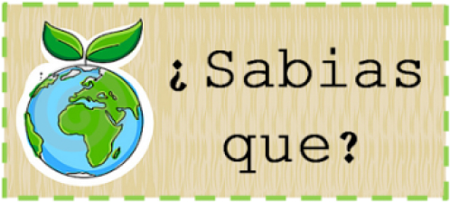

<!DOCTYPE html>
<html><!DOCTYPE html>
  <html lang="es">
    <head>
      <meta charset="UTF-8">
      <meta name="viewport" content="width=device-width, initial-scale=1.0">
      <title>Ecoactualizate</title>
      <link rel="shortcut icon" href="../assets/favicon.ico" type="image/x-icon">
      <link rel="preconnect" href="https://fonts.googleapis.com">
      <link rel="preconnect" href="https://fonts.gstatic.com" crossorigin>
      <link href="https://fonts.googleapis.com/css2?family=Montserrat:wght@200;300;400;500;600;700;800;900&amp;display=swap" rel="stylesheet">
      <meta http-equiv="X-UA-Compatible" content="IE=edge">
      <script defer src="../js/actualizate-item.js" type="module"></script>
      <link rel="stylesheet" href="../css/actualizate-item.css">
    </head>
  </html>
  <body>
    <!-- **************** Navbar **************** -->
        <section class="navbar-light">
              <div class="navbar-container container"><a class="branding" href="../">
                  <h3 class="h3 branding__title">Ecoactualizate</h3></a>
                    <button class="menu-toggler"></button>
                <nav class="nav-menu">
                  <ul>
                    <li><a class="link" href="../">Inicio</a></li>
                    <li><a class="link link--active" href="../actualizate/actualizate.html">Actualizate</a></li>
                    <li><a class="link" href="../noticias/noticias.html">Noticias</a></li>
                    <li><a class="link" href="../nosotros/nosotros.html">Nosotros</a></li>
                  </ul>
                  <div class="nav-menu__button"> <a class="btn btn-primary btn-md" href="../contribuir/contribuir.html">Contribuir</a></div>
                </nav>
              </div>
        </section>
    <!-- **************** Fin Navbar **************** -->
    <!-- ***************************** HEADER *****************************-->
    <!-- ***************************** FIN HEADER ***************************** -->
    <!-- ***************************** MAIN ***************************** -->
    <main>
      <button class="sidebar-toggler"></button>
              <aside class="sidebar">
                <nav class="sidebar-container">
                  <ul>
                    <li class="sidebar__section"><a href="../actualizate/residuos.html">Separacion de residuos</a></li>
                    <li class="sidebar__section"><a href="../actualizate/cinco-r.html">Cinco R Ecológicas</a></li>
                    <li class="sidebar__section sidebar__section--active"><a href="../actualizate/ecodatos.html">Ecodatos</a></li>
                    <li class="sidebar__section"><a href="../actualizate/recicla-en-casa.html">Recicla en casa</a></li>
                  </ul>
                </nav>
              </aside>
          <section class="contents">
            <article class="contents-container">
                  <div class="content__title">
                    <h2 class="h2 bold">Ecodatos</h2>
                    <p class="body light">Ecodatos</p>
                  </div>
                      <div class="block-content">
                        <div class="block-content__image"></div>
                            <h4 class="body extrabold">Datos curiosos sobre el medio ambiente</h4>
                            <ul>
                              <li>Las latas de aluminio se pueden reciclar y volver a poner en el estante de una tienda en tan sólo unos 2 meses.</li>
                              <li>La grasa humana obtenida por liposucción puede ser reciclada como combustible.</li>
                              <li>Los huesos eran uno de los artículos más reciclados antes del siglo XX. Tenían diferentes usos, desde alimento hasta la fotografía</li>
                              <li>Nuestra basura se compone de: 45% materia orgánica, 22% papel y cartón, 10% plástico, 7% vidrio, 4% metal, 2% tetra pack y 10% otros residuos.</li>
                              <li>Al reciclar una botella de plástico ahorramos la energía necesaria para mantener una bombilla encendida durante 6 horas.</li>
                              <li>Con 5 botellas de 2 litros de plástico tipo PET se puede producir fibra de relleno para una chaqueta de abrigo a esquiar.</li>
                              <li>La fabricación de papel reciclado consume un 62% menos de energía y un 86% menos de agua que el papel nuevo.</li>
                              <li>Reciclando una lata de aluminio ayudamos a ahorrar energía suficiente para hacer funcionar un televisor durante 3 horas.</li>
                              <li>El reciclaje de una tonelada de plástico puede ahorrar hasta 7.500 litros de gasolina.</li>
                              <li>El ranking de países más comprometidos con el reciclaje: 1.Suiza, 2.Australia, 3.Alemania, 4.Países Bajos, 5.Noruega.</li>
                              <li>Más de 11 millones de toneladas de ropa reciclable, zapatos y textiles se desechan cada año. Esto equivale a 70 mil millones de camisetas.</li>
                              <li>El vidrio es 100% reciclable y se puede utilizar una y otra vez. El reciclaje de vidrio se separa en colores pues este conserva su color original</li>
                              <li>Más de 1 millón de aves marinas mueren cada año por contaminación oceánica producida por desperdicios que podrían haber sido reciclados.</li>
                            </ul>
                      </div>
            </article>
          </section>
    </main>
    <!-- ***************************** FIN MAIN ***************************** -->
    <!-- ***************************** FOOTER ***************************** -->
    <footer>
            <section class="footer">
              <div class="footer-container container">
                <div class="footer-social">
                  <h3 class="h3 h3-upper extrabold">EL FUTURO NO ES DESECHABLE</h3>
                  <div class="footer-social__container"><a href="https://api.whatsapp.com/send?phone=3002047922"></a><a href="mailto:sofiatobon2020@gmail.com"></a></div>
                </div>
                <div class="footer-branding"><a class="footer-branding__container" href="#">
                    <p class="body bold">Ecoactualizate</p></a><a class="btn btn-primary btn-sm" href="../contribuir/contribuir.html">Contribuir</a></div>
              </div>
            </section>
    </footer>
    <!-- ***************************** FIN FOOTER ***************************** -->
  </body>
</html>